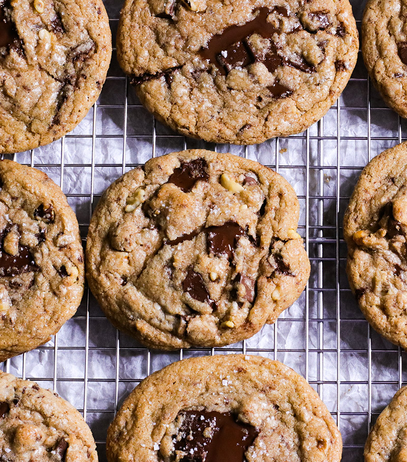

Cookies

Cookies
This chocolate chip recipe will make delicious brown butter cookies which are perfect for year-round!
Ingredients
- 1 3/4 cups all-purpose flour
- 1/2 teaspoon baking soda
- 1/4 tablespoons unsalted butter
- 1/2 cup granulated sugar
- 3/4 cups packed dark brown sugar
- 1 teaspoon sea salt
- 2 teaspoons vanilla extract
- 1 large egg
- 1 large egg yolk
- 2 cups chopped semi-sweet chocolate
- sea salt for finishing
Steps
- Preheat oven to 375 degrees F
- Heat 10 tablespoons of butter over medium-low heat until butter is dark golden brown
- Add sugars, salt, and vanilla to bowl with butter and mix fully
- Add egg and yolk and mix
- Stir in flour and chocolate chips
- Divide dough into large balls and arrage on prepared baking sheet
- Sprikle each cookie with sea salt
- Bake cookies for 10-12 minutes until golden brown
- Enjoy!